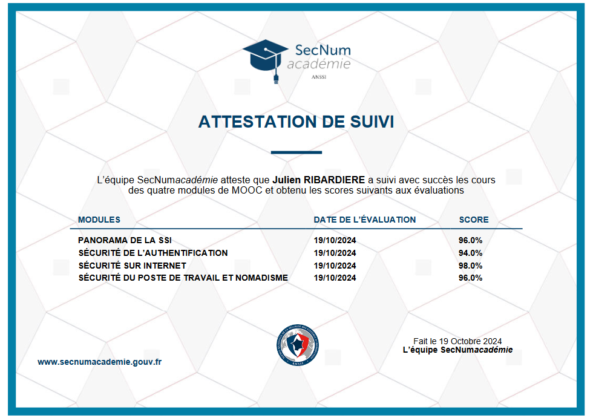

Julien RIBARDIERE
- Age: 27 ans
- Localisation: CAEN, Calvados
- Formation en cours: BUT Réseaux et Télécommunications
- Mail: julien.ribardiere14@gmail.com

Dans le cadre d'un travail d'équipe composé de 4 personnes, mon équipe et moi avons fait le choix de sélectionner un sujet portant sur la découverte des machines dans un réseau informatique.
Nous devions évoquer les machines intégrées dans un réseau informatique ainsi que l'analyse de leurs systèmes d'exploitation, découvrir leurs services ainsi que les logiciels utilisés (et leurs versions).
Assister l'administrateur du réseau
• Comprendre l'architecture et les fondements des systèmes numériques, les principes du codage de l'information, des communications et de l'internet
• Maîtriser les rôles et les principes fondamentaux des systèmes d'exploitation afin d'interagir avec ceux-ci pour la configuration et l'administration
• Identifier les dysfonctionnements du réseau local et savoir les signaler
Ma mission principale était de découvrir les services disponibles dans un réseau informatique.
Pour ce faire, j'ai dû utiliser "NMAP", un logiciel qui permet de scanner les ports sur une station distante et d'expliquer son fonctionnement via un exemple.
Pour la démonstration, j'ai installé NMAP via une machine virtuelle équipée du système d'exploitation Debian, issue d'une distribution Linux, sur ma station avec un système d'exploitation Windows.
Ensuite, j'ai utilisé NMAP pour scanner une autre machine virtuelle (que j'avais installée sur ma station).
En complément, j'ai pu suivre les cours en ligne de l'ANSSI dans le cadre de ce projet, ce qui m'a permis de consolider les compétences que j'avais déjà acquises auparavant, mais aussi d'acquérir de nouvelles connaissances.

Bien qu'ayant eu une note très confortable de 16/20 grâce à un bon travail d'équipe, je pense que nous pourrions faire un peu mieux en ajoutant un élément bibliographique afin d'intégrer les sources qui nous ont permis de réaliser notre travail.
Même si ce projet fut le premier projet de ma première année de mon parcours en BUT Réseaux et Télécommunications, le travail de groupe avec mes collègues fut quasiment parfait grâce à une répartition des tâches équilibrée.
Et grâce à cette répartition des tâches, il n'y a pas eu de problèmes dans le cadre de sa réalisation et il n'y a pas eu de conflit lié aux enjeux de la réussite du projet.
Mais malgré la réussite de la collaboration dans le cadre de ce projet, la gestion du temps a été le principal défi, contraignant toute l'équipe à travailler tard le soir avant la date de rendu afin de préparer la présentation, incluant l'oral et le diaporama.